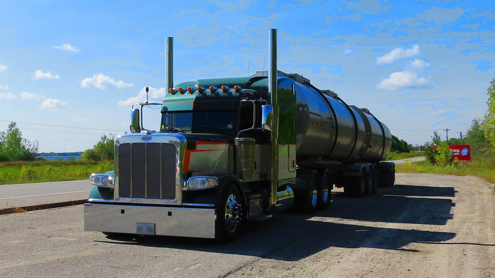

A truck or lorry is a motor vehicle designed to transport cargo, carry specialized payloads, or perform other utilitarian work. Trucks vary greatly in size, power, and configuration, but the vast majority feature body-on-frame construction, with a cabin that is independent of the payload portion of the vehicle.
The majority of trucks currently in use are still powered by diesel engines, although small- to medium-size trucks with gasoline engines exist in the US, Canada, and Mexico.